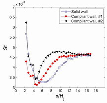
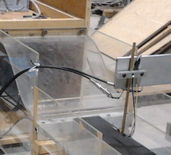
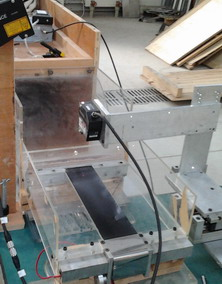

Turbulent structures in a separated flow will cause pressure fluctuations on a solid wall nearby. The wall will fluctuate if it is compliant. The motion of the wall will then affect the development of the flow itself, and thus modifies the pressure distributions and the convective heat transfer on the wall.
This investigation is to determine the mechanisms of interactions using experimental methods. A 10mm height slot jet with an aspect ratio of 30 was used. The contraction ratio was 30 as well. Reynolds number was 20000. The flow at the exit of the jet is uniform, the turbulence intensity is around 1.5%. The heat transfer for a wall jet (no offset distance) was measured using a Rayteck pyrometer calibrated using a blackbody calibrator. The jet temperature was measured using an Advantech thermocouple board with a K type thermocouple. Three cases were measured and the initial results were shown in the figure on the right, tight foil with no visible vibration(max rms movement less than 0.2mm), loose foil with rms vertical movement about 1mm in the center of the foil, loose foil with rms movement of 2mm. The Stanton numbers in these three cases showed that the motions did have a significant impact on the heat transfer, more vibrations caused more heat transfer.
The movement of the foil was measured using two laser displacement sensors, one fixed at x/H=6, the other moving using a traversing mechanism. The simultaneously measured data was analyzed in a similar fashion to the way we worked with two microphones on round impinging jet. It was found the foil motion was primarily composed of 1st (half sine wave), 2nd (1 sine wave) and 3rd, plus a small fraction of traveling wave with a similar frequency and group velocity of the wall jet structures.
The velocity distributions were measured using a hotwire anemometry system with a x-wire probe. The comprehensive measurements and comparisons are undergoing.
Updated: 2011-12-31
|

Distributions of the Stanton number (St=h/\rho c U)

Hotwire anemometry and X probe were used to measure the flow velocity

Laser displacement sensors were used to measure the foil vibrations |